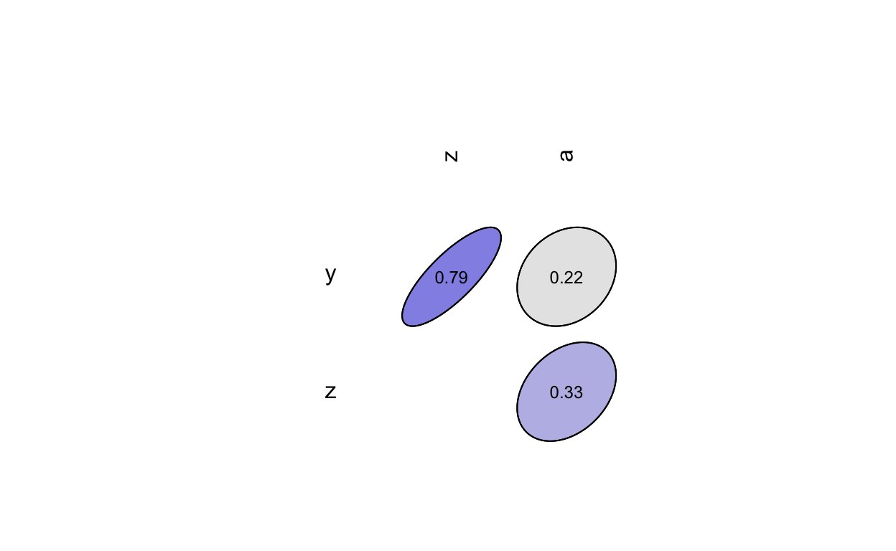
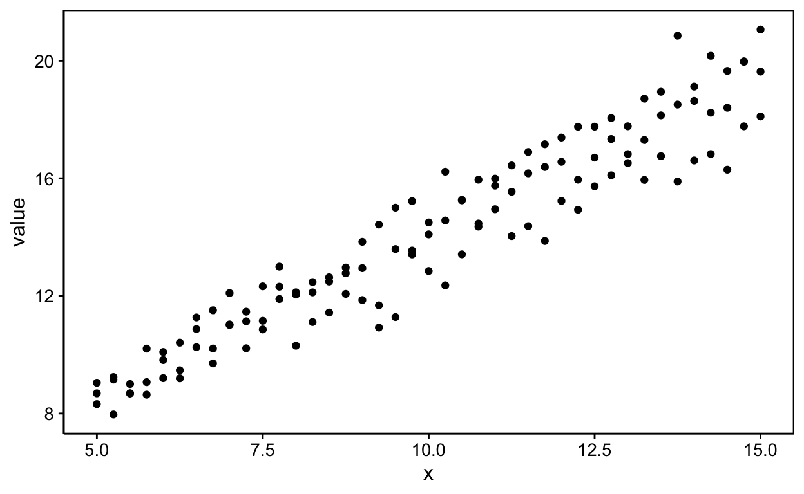

Science des données biologiques II
Réalisé par le service d'Écologie numérique, Université de Mons (Belgique)Objectifs
- Revoir la corrélation et les indices de Pearson et Spearman
- Maîtriser la régression linéaire dans R, en particulier la fonction
lm().
Corrélation
Vous avez à disposition le jeu de données df qui comprend les 5 variables suivantes : x, y, z, a, id.
- Réalisez une matrice de corrélation avec l’indice de Pearson.
💬 Un snippet peut vous aider à réaliser cet exercice.
correlation(___[, ___], use = ___, method = ___)##Snippet utile ## .escor: correlation matrix (enhanced) [SciViews]
correlation(DF[, INDEX_EXPRESSION], use = "complete.obs", method = "pearson")
# Relisez le chapitre 12 du livre science des données 1 <https://wp.sciviewg/sdd-umons/>correlation(df[, ___:___], use = "complete.obs", method = "pearson")
#### ATTENTION: Hint suivant = solution !###### Solution ##
correlation(df[, 1:4], use = "complete.obs", method = "pearson")Répondez à la question ci-dessous.
- Réalisez une matrice de corrélation avec la méthode de Spearman.
💬 Un snippet peut vous aider à réaliser cet exercice.
correlation(___[, ___], use = ___, method = ___)##Snippet utile ## .escor: correlation matrix (enhanced) [SciViews]
correlation(DF[, INDEX_EXPRESSION], use = "complete.obs", method = "pearson")
# Relisez le chapitre 12 du livre science des données 1 <https://wp.sciviewg/sdd-umons/>correlation(df[, ___:___], use = "complete.obs", method = "spearman")
#### ATTENTION: Hint suivant = solution !###### Solution ##
correlation(df[, 1:4], use = "complete.obs", method = "spearman")Répondez à la question ci-dessous
- Reproduisez le graphique ci-dessous en vous basant sur vos matrices réalisées précédemment

correlation(___[,____], use = ___, method = ___)plot(correlation(___[,____], use = ___, method = ___), type = ____)plot(correlation(___[,___:____], use = ___, method = ___), type = "upper")
#### ATTENTION: Hint suivant = solution !####plot(correlation(df[, 2:4], use = "complete.obs", method = "pearson"), type = "upper")Régression linéaire
Réalisez la régression linéaire de value en fonction de x sur le jeu de données maize (des données dont il n’est pas important de connaître l’origine ni la signification pour l’exercice, et mesurées sur des plans de maïs). Le graphique en nuage de points permet de visualiser les données.

💬 Un snippet peut vous aider à réaliser cet exercice.
summary(lm. <- lm(data = ___, ____))##Snippet utile ## .mlin: linear model
summary(lm. <- lm(data = DF, FORMULA))
#### ATTENTION: Hint suivant = solution !######Solution##
summary(lm. <- lm(data = mais, value ~ x))Suite à votre analyse répondez aux questions suivantes :
Conclusion
Votre auto-évaluation concernant la régression linéaires dans R (première partie) arrive à son terme. Il est temps de revenir au syllabus et de poursuivre vers des exercices pratiques maintenant.